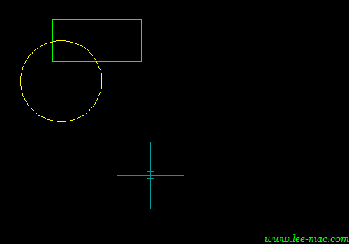

Limited Length Polyline
This page is delivered for consistency purposes only, as part of the LeeMac sample module of DynALisp, which shows how DynALisp turns existing AutoLISP programs into a module. The program and its description are the work of Lee Mac, who keeps all the credit for them. The original page, with the latest version, is on Lee Mac's website: https://lee-mac.com/totallengthpline.html
| Function Syntax | LM-TotalLengthPolyline – original syntax: tlpline (see aliases) |
| Current Version | 1.0 |
| Compatible with AutoCAD for Mac? | No |
| Compatible with AutoCAD LT? | Yes |
| Original Page | lee-mac.com/totallengthpline.html |
Program Description
This program allows the user to dynamically construct a straight-segmented polyline whose overall length may optionally be limited to a given value.
Upon issuing the command syntax tlpline at the AutoCAD command-line, the program will first prompt the user to specify an optional length limit. At this prompt, the user may press ENTER to dismiss the prompt and proceed without restricting the polyline length.
The user may then proceed to dynamically construct a polyline with linear segments, with the overall polyline length automatically restricted to the specified limit. After three vertices have been specified, the user may choose to close the polyline, with the length remaining within the given limit.
Whilst constructing the polyline, the overall polyline length is displayed in real-time beside the AutoCAD cursor as a visual aid. The program uses my GrText utility to facilitate this visual effect.
The program also utilises my GrSnap utility to enable Object Snap functionality in conjunction with the dynamic visual effect.
The program is also designed to perform successfully under all UCS and View settings.
Demonstration

Bundled program notes
;;---------------------=={ Total Length Polyline }==--------------------;;
;; ;;
;; This program allows the user to dynamically construct a ;;
;; straight-segmented polyline whose overall length may optionally be ;;
;; limited to a given value. ;;
;; ;;
;; Upon issuing the command syntax 'tlpline' at the AutoCAD ;;
;; command-line, the program will first prompt the user to specify ;;
;; an optional length limit. At this prompt, the user may press ;;
;; 'Enter' to dismiss the prompt and proceed without restricting the ;;
;; polyline length. ;;
;; ;;
;; The user may then proceed to dynamically construct a polyline with ;;
;; linear segments, with the overall polyline length automatically ;;
;; restricted to the specified limit. After three vertices have been ;;
;; specified, the user may choose to close the polyline, with the ;;
;; length remaining within the given limit. ;;
;; ;;
;; Whilst constructing the polyline, the overall polyline length is ;;
;; displayed in real-time beside the AutoCAD cursor as a visual aid. ;;
;; ;;
;; The program also utilises my GrSnap utility to enable Object Snap ;;
;; functionality in conjunction with the dynamic visual effect. ;;
;; ;;
;; The program is also designed to perform successfully under all ;;
;; UCS and View settings. ;;
;; ;;
;;----------------------------------------------------------------------;;
;; Author: Lee Mac, Copyright © 2016 - www.lee-mac.com ;;
;;----------------------------------------------------------------------;;
;; Version 1.0 - 2016-06-23 ;;
;; ;;
;; - First release. ;;
;;----------------------------------------------------------------------;;
Command Names And Aliases
As in every DynALisp module, each program of this sample module has one main command, named LM-*, and the original command names of Lee Mac's page are kept as its aliases: they run the same command, and can be added, renamed or removed in Dyl-Suite (saved in Resources\Aliases.csv).
| Command | Aliases | Name |
|---|---|---|
| LM-TotalLengthPolyline | TLPLINE | Total Length Polyline |